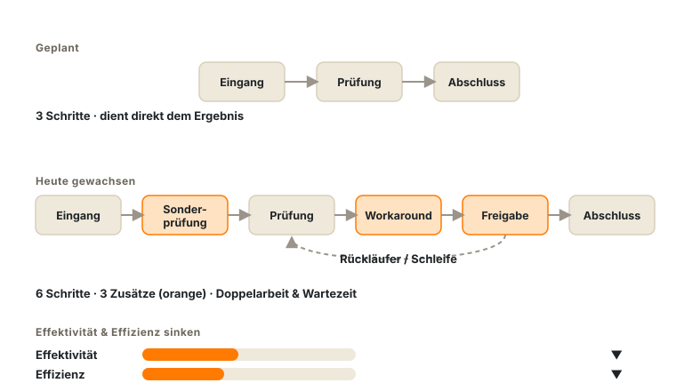
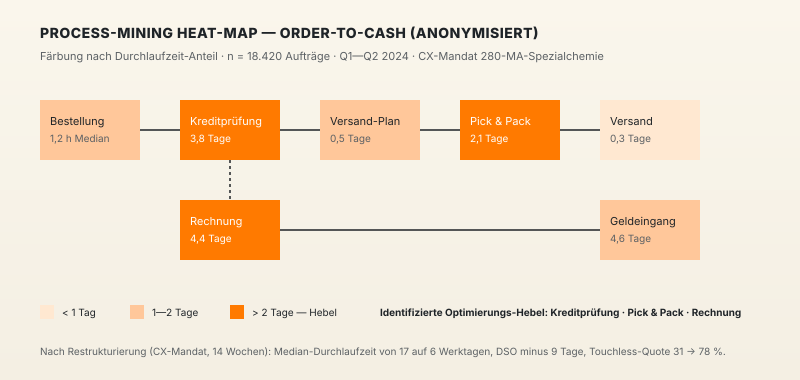
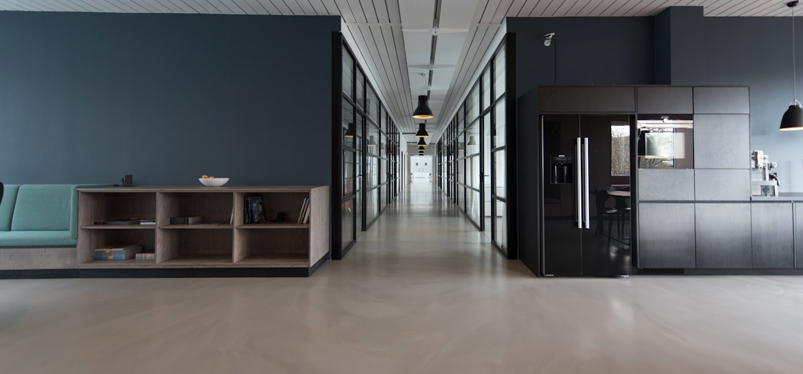
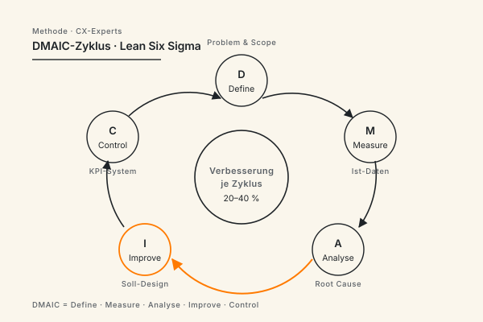

Geschäftsprozesse › messbar besser machen.
CX-Experts bringt Ihre Geschäftsprozesse vom Engpass zur sauberen Soll-Architektur. Ist-Aufnahme, Schwachstellenanalyse, Soll-Modellierung und Umsetzung — mit klarer Methodik und einem über Jahre erprobten Vorgehen. Branchenübergreifend und für Organisationen jeder Größe, DACH-weit.
Über Jahre organisch entstandene Prozesse bremsen irgendwann Effektivität und Effizienz.
Die Ursache liegt meist in drei Engpässen: dünner Datenbasis, zu viel Konzept bei wenig erprobter Umsetzung und fehlender Anbindung an die operative Verantwortung.

Subjektive, undokumentierte Prozesspraxis
Ist-Prozesse sind zunehmend undokumentiert. Sie bestehen als Mitarbeiter-Wissen und existieren ausschließlich als gelebte Praxis, aber nicht als Prozessbeschreibungen, die gemeinsam betrachtet und optimiert werden können.
Das Soll-Modell wird präsentiert, aber nie umgesetzt
Ein Zielbild entsteht, wird vorgestellt und bleibt danach unangetastet. Es fehlt der Übergang vom Modell zur gelebten Veränderung — und damit die messbare Wirkung im Betrieb.
Neue Prozesse und Methoden wirken nur mit Akzeptanz in der Belegschaft
Eine Methode wirkt erst, wenn die Mitarbeitenden sie im Alltag anwenden. Die begleitete Einführung macht aus einer Vorgabe gelebte Praxis; bleibt sie aus, fällt der Prozess in den alten Zustand zurück.
Kennzahlen werden erhoben, aber niemand handelt danach
Es wird gemessen, doch die Zahlen bleiben folgenlos. Wir bauen Kennzahlen-Systeme, die jede Zahl mit einer zuständigen Person und einer fälligen Maßnahme verknüpfen, sodass aus dem Report eine Entscheidung wird.
Sechs Leistungsfelder — von Process Mining bis Befähigung.
Wir bringen die ganze Bandbreite an Kompetenzen aus einer Hand: datenbasierte Prozessanalyse, Geschäftsprozessmanagement, Automatisierung, Umsetzungssteuerung, Kennzahlen-Governance und Befähigung. Welche Felder ein Vorhaben braucht, entscheidet der konkrete Engpass.
Prozessanalyse & Process Mining
Ist-Aufnahme mit Best-Practice-Methoden und einer sauberen Datenauswertung. Das Ergebnis ist ein faktenbasiertes Bild Ihrer Engpässe. Wir erstellen einen übersichtlichen Report und liefern eine Entscheidungsvorlage mit klaren Optionen und nächsten Schritten.
Geschäftsprozessmanagement & Modellierung
Basierend auf einer Gap-Analyse, in der wir Redundanzen, Datensilos und Sicherheitslücken identifizieren, bestimmen wir klare Soll-Prozesse in eindeutiger Notation (BPMN), mit Standardisierung und sauberen Schnittstellen zwischen Fachbereich und IT.
Prozessautomatisierung (RPA & KI)
Wiederkehrende, regelbasierte Schritte automatisieren wir mit RPA und KI; Urteil und Freigabe bleiben beim Menschen.
Umsetzungssteuerung & Interim-Verantwortung
Wir bleiben in der Umsetzung — als Programm-Manager, Interim-Prozessverantwortliche oder Coaches, bis der Ablauf im produktiven Betrieb läuft.
Kennzahlen & Governance
KPI-Systeme, klare Verantwortlichkeiten und ein fester Review-Zyklus verknüpfen jede Zahl mit einer fälligen Maßnahme.
Change-Management & Befähigung
Die Mitarbeitenden gestalten den neuen Ablauf mit und werden befähigt, ihn zu tragen — so wird er gelebte Praxis.
- Ein Team über alle Felder hinweg — aus einer Hand, lückenlos übergeben
- Entscheidungen auf Basis von Daten, getragen von Belegen
- Klare Verantwortlichkeiten und Kennzahlen, die bleiben
- Werkzeug-unabhängig — passend zu Ihrer Systemlandschaft
Fünf Phasen — jede mit klarem Output, jede einzeln beauftragbar.
Sie entscheiden nach jeder Phase, ob die nächste sinnvoll ist. Einzeln beauftragbare Schritte. Schrittweise Verbindlichkeit, schrittweise Wertschöpfung.
Lagebild
Prozesslandkarte, betroffene Systeme, vorhandene Kennzahlen, Beteiligte. Ergebnis: ein kompaktes Lagebild mit den Prozessen, die den größten Hebel haben.
Analyse
Datenbasierte Untersuchung der Kernprozesse: wo die Engpässe liegen, wie groß sie sind und was ihre Behebung bringt.
Soll-Design
Klare Soll-Modelle, ein Umsetzungspfad und eindeutige Verantwortlichkeiten — abgestimmt mit Fachbereich und IT, als abgenommene, umsetzungsreife Architektur.
Pilot & Rollout
Der erste Prozess geht in den optimierten Betrieb, begleitet durch Reviews und Coaching. Danach Schritt für Schritt auf weitere Prozesse ausweiten.
Verankerung & Übergabe
Verantwortlichkeiten und Kennzahlen sind etabliert, das Team arbeitet eigenständig weiter. Auf Wunsch bleiben wir Sparringspartner für die nächste Welle.
Von der Diagnose zur Wirkung — in fünf sichtbaren Schritten.
Jede Phase produziert einen abgegrenzten Output, jeder Output ist einzeln beauftragbar — fünf entkoppelbare Wertschöpfungs-Schritte mit klarer Verantwortung.

CX-Experts im Vergleich zu Konzern-Beratung, Inhouse-Initiative und Einzelberater.
Welcher Beratungs-Typ zu Ihrer Situation passt, hängt von Volumen, Tiefe und Eigenkapazität ab. Diese Tabelle macht die typischen Kompromisse explizit — als faire Grundlage für Ihre Entscheidung.
| Dimension | CX-Experts | Konzern-Beratung (MBB / Big4) | Inhouse-Initiative | Einzelberater |
|---|---|---|---|---|
| Berater-Seniorität ab Tag 1 | ✓ Senior-Teams | ✗ Junior-Pyramide | Variabel | ✓ |
| Vor-Ort-Präsenz in Unternehmen jeder Größe | ✓ Wochenweise Standard | Nur in Großmandaten | Permanent | Begrenzt |
| Implementierungs-Begleitung | ✓ Bis Verankerung | Selten, Aufpreis | ✓ | Teilweise |
| Investitionsrahmen | Mittel | Hoch | Vollkosten | Niedrig–mittel |
| Branchenübergreifend einsetzbar | ✓ | ✓ | Begrenzt | Variabel |
| Methodische Breite | Vollständig | Vollständig | Variabel | Eine Tiefe |
| Skalierung auf Großmandat > 30 Berater | Bedingt | ✓ | Nein | ✗ |
| Eigenkapazität des Mandanten erforderlich | Gering | Mittel | Hoch | Mittel-Hoch |
Wo Prozessoptimierung bei unseren Mandanten Wirkung zeigt.
Eine Auswahl von Fachbereichen und Business Cases, in deren Kontext wir Prozesse optimiert und nachhaltig verankert haben. Dabei fällt uns auf: Der höchste Hebel liegt fast immer dort, wo Standardprozesse mit hoher Frequenz aufeinander treffen — und wo bisher manuell viel kompensiert wird.

Bestellung bis Zahlung
Von der Bestellung bis zur Zahlung — weniger manuelle Schritte durch Teil-Automatisierung, Kosten-Einsparungen durch Eliminierung von Redundanzen und Ineffizienzen.
Vertriebs-Prozesslandkarte
Erstellung und Einführung eines Soll-Prozesses und einer Soll-Systemlandschaft für ein effizientes und effektives Zusammenspiel von Vertriebsmitarbeitenden, Vertriebs-Management, Software und KI-Assistenten.
Kunden-Onboarding
Vom Vertragsabschluss bis zum produktiven Start — Design einer kundenzentrierten Customer Journey im Rahmen einer Omni-Channel-Strategie.
Fall- & Anfragebearbeitung
Eingehende Fälle sauber zuordnen, Standardanfragen zügig lösen, Integration von KI-Assistenten und Prozesse zur Eskalation für den Bedarf menschlicher Sachbearbeitung.
Mitarbeiter-Onboarding
Vom Vertrag bis zum eingerichteten Arbeitsplatz — über alle Beteiligten hinweg klar geregelt.
Monatsabschluss
Den Abschluss beschleunigen — durch Standardisierung, parallele Bearbeitung und klare Verantwortungen.
Vier Punkte, die unsere Arbeit beschreiben.
Kundenzentrierung End-to-End
Wir wählen das Vorgehen nach Ihrem Problem, orientiert an Ihrer Situation. Wir bleiben undogmatisch und passen Projekt- und Analyse-Methoden fallspezifisch an — dabei bestimmen wir gemeinsam ein Vorgehen, das zu Ihrer Organisation und ihrer Organisationskultur passt.
Entscheidungen auf Basis von Daten
Wo Daten vorhanden sind, arbeiten wir damit. Wo möglich, untermauern wir jede Empfehlung mit einer Datenbasis. Das ermöglicht eine Messung von Fortschritt und Performance und macht die Wirkung unserer Arbeit für alle Stakeholder sichtbar.
Wir liefern Best Practices, setzen um — und befähigen Ihre Mitarbeitenden
Unternehmensberater haben den Ruf, Konzepte zu entwickeln und die Verantwortung für Erfolg und Umsetzung beim Kunden zu lassen. Wir begleiten bis in den Betrieb — als Interim-Verantwortliche, Programm-Manager oder Coaches —, bis der neue Prozess in Ihrer Organisation gelebt wird.
Befähigung als Ziel
Wir arbeiten Ihre Teams so ein, dass sie nach der Übergabe eigenständig weiterkommen. Unser Ziel ist eine funktionierende Organisation, die aus eigener Kraft weiterläuft — über das Mandat hinaus.
Die wichtigsten Methoden der Prozessoptimierung — neutral erklärt.
Lean
Ein Ansatz, der den Wert aus Kundensicht maximiert und Verschwendung im Ablauf reduziert.
Six Sigma
Eine Methode, die datenbasiert Streuung und Fehlerquoten in Prozessen senkt.
Kaizen / KVP
Ein Prinzip, das Prozesse in kleinen Schritten kontinuierlich verbessert.
BPMN
Eine Notation, die Geschäftsprozesse standardisiert und lesbar modelliert.
DMAIC
Ein Zyklus, der Verbesserung in Define, Measure, Analyze, Improve und Control strukturiert.
Theory of Constraints
Ein Ansatz, der gezielt den Engpass erweitert, der das Tempo bestimmt.
Drei Prinzipien, die wir intern und extern in der gemeinsamen Zusammenarbeit leben.
Gute Prozessarbeit lebt von gemeinsamer Sprache, abgestimmten Zielbeschreibungen und individueller Verantwortung. Dabei ist eine geteilte, partizipativ erarbeitete Zielbeschreibung der Anker: Sie hält Fachbereich, IT und Leitung auf demselben Ergebnis und macht jeden Fortschritt für alle nachvollziehbar.

Gemeinsame Sprache
Wir modellieren Prozesse in einer Notation, die Fachbereich, IT und Leitung gleichermaßen lesen. So redet das ganze Projekt über denselben Ablauf, und in der Übersetzung geht nichts verloren.
Abgestimmte Zielbeschreibungen
Vor dem ersten Modell legen wir gemeinsam fest, woran wir Erfolg messen — partizipativ erarbeitet und von allen Beteiligten getragen. Dieses Zielbild bleibt der Maßstab, an dem jede Entscheidung im Projekt ausgerichtet wird.
Individuelle Verantwortung
Jeder Prozess und jede Kennzahl bekommt eine namentlich zuständige Person. Verantwortung liegt damit eindeutig — und bleibt auch nach der Übergabe in Ihrer Organisation verankert.
Wie CX-Experts Wirkung sichtbar macht — und wann ein Mandat besser ruht.
Prozessberatung ist nur so viel wert wie die Veränderung, die im Betrieb ankommt. Wir definieren Erfolg deshalb entlang messbarer KPIs und begleiten Mandate, deren strukturelle Voraussetzungen für Veränderung gegeben sind.
Klare Kennzahlen, klare Baseline
Jede Optimierung startet mit einer Baseline und einer überschaubaren Zahl klar definierter Kennzahlen — Durchlaufzeit, Qualität, manueller Aufwand. Alles Weitere wird daran gemessen. Die Baseline ist die feste Voraussetzung jeder Optimierung.
Regelmäßiges Review nach dem Start
Nach dem Pilotstart tracken wir die Kennzahlen und evaluieren die Ergebnisse in einem festen Review-Rhythmus mit den Verantwortlichen — Trend-Vergleich, Nachsteuern, frühe Risiko-Erkennung. Diese Reviews sind im Mandat enthalten.
Mandate, die wir ablehnen
Prozessoptimierung gelingt mit der Rückendeckung der Leitung; fehlt sie, scheitert sie. Wir lehnen daher Projektanfragen ab, die nicht im Einklang mit der Vision und den Zielvorgaben der Leitungsebene stehen und denen ein interner „Champion“ fehlt.
Artefakte und Deliverables im Rahmen der Projektübergabe
- Soll-Modelle aller optimierten Prozesse
- ein Kennzahlen-Dashboard in Ihrer bestehenden Systemlandschaft
- klare Rollenbeschreibungen für die Prozessverantwortung
- Schulungsmaterial für neue Mitarbeitende
Fragen, die in den ersten Gesprächen immer kommen.
Was kostet eine Prozessoptimierung?
Wie lange dauert ein Prozessoptimierungs-Projekt?
Welche Methoden nutzt eine Prozessberatung?
Wann lohnt sich Prozessoptimierung?
Brauchen wir spezielle Analyse-Software, um zu starten?
Sind wir an bestimmte Werkzeuge gebunden?
Was ist der Unterschied zwischen Prozessoptimierung und BPM-Beratung?
Wo fangen wir mit der Prozessoptimierung an?
Warum scheitern viele Prozessoptimierungs-Projekte?
Lohnt sich eine externe Prozessberatung?
Prozessoptimierung › starten.
Der erste Schritt ist ein Erstgespräch von 30–45 Minuten. Wir klären Ihre Ausgangslage, die wichtigsten Engpässe und ob CX der richtige Partner ist. Wenn nicht, verweisen wir auf jemanden, der besser passt.
Erstgespräch anfragen →